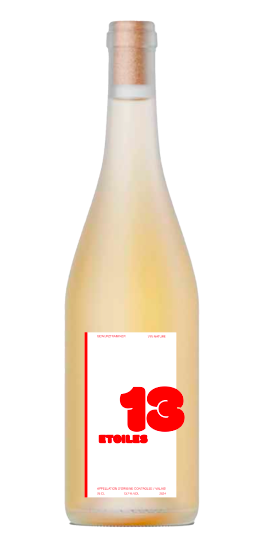

Le Gewurztraminer du Valais est un vin blanc aromatique aux notes de litchi, de rose et d'épices. Riche et rond en bouche, il offre une belle fraîcheur alpine. Parfait avec des plats exotiques, des fromages forts ou des desserts fruités, il exprime tout le caractère du terroir valaisan.
GEWURZTRAMINER

VIN NATURE
VALAIS
2024
13,7 % VOL
75 CL
AJOUTER AU PANIER
CÉPAGE
GEWURZTRAMINER
MILÉSIME ACTUEL
2024
PREMIER MILÉSIME
2002
PROVENANCE
VALAIS
VINIFICATION
18 MOIS
TEMPÉRATURE DE SERVICE
8-10° C
POTENTIEL DE GARDE
3-5 ANS
NOTES DE DÉGUSTATION
RICHE ET ROND


Savourez l’art du vin : réservez votre dégustation pour une expérience inoubliable.
RÉSERVER UNE DÉGUSTATION